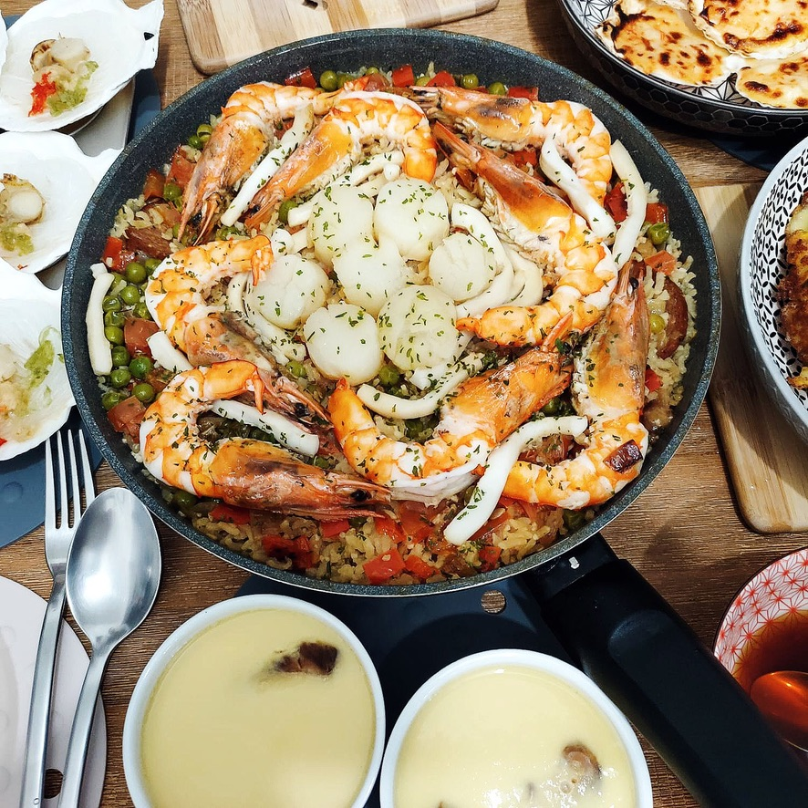

< Home
Seafood Paella Recipe

Description
Fell in love with this dish when I was travelled to Spain for the first time in 2014. I recall fondly having a 5 euro paella and a coke at a roadside stall.
Ingredients
- 2.5 cups chicken stock
- 1/4 tsp saffron
- Pinch of sale
- 1.5 tbsp olive oil
- 1/4 yellow onion
- 1/4 red bell pepper
- 1.5 cloves garlic
- 85g chorizo
- 200g tomatoes
- 1.5 cups rice
- 1/2 cup frozen peas
- 220g shrimp
- 220g mussels
- 220 clams
- 1/8 cup parsley
Steps
- Bring stock to a boil. Turn off heat, steep saffron for at least 15 mins.
- Heat oil. Add onion and bell pepper, cook 5-7 mins until onion is transparent.
- Stir in garlic and chorizo.
- Add uncooked rice and cook, stirring often, for 4-5 mins until rice is lightly toasted.
- Stir in the stock, tomatoes, and peas.
- Spread the rice evenly.
- Close and cook without stirring for 15 mins, or until the rice absorbs most of the stock.
- Add seafood, cook for 10 more minutes.
- Open cover and cook.
- Sprinkle parsley.